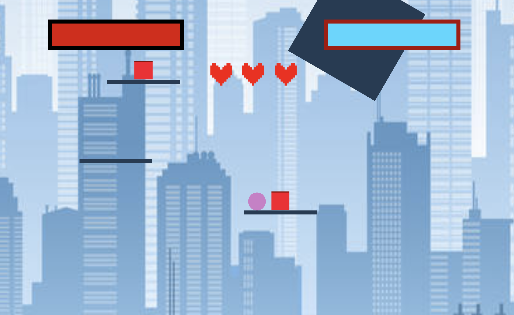

GitHub
GitHub
-
The Turning

You wake up in your home next to a bottle of pills, wearing a hospital bracelet. Your memory is foggy. Your child is severly ill and unresponsive. You set out to the hospital name from your bracelet to find a cure. As time progresses, you get sicker and sicker. Taking the pills you found temporarily alleviates the turning. It's your job to solve mysteries, find the cure, and escapte the hospital before it is too late.
The turning is a thrilling tilemap game. The object of the game is to find the cure and escape the hospital. The player must gather ingredients to find the cure. The ingrediants are placed around the map. Each ingredient has a unique puzzle required for completion in order to obtain it. Once all ingredients are found, the player can make their way to the labratory bench to put them all together for a final vaccine.
Play The Game
Tools Utilized: Unity and C#
Other Contributors: Gabby Orr, Juhi Choudhury, Morgen Halle
Music Creators: Parker Lacy, Sam Gabelmann -
Inner Ally Companion

Inner Ally is a new company by Dr. Cynthia Phelps. Dr. Phelps has an ambition to help those suffering with depresison and low self esteem. Dr. Phelps wants to help people change negative thoughts towards themselves into positive ones. At a helath and biotech hackathon, Dr. Phelps recruited a team of Trinity University students to help her design an application for this cause. I was lucky enough to be a part of this team. We created an application to help users boost their inner confidence and find their "InnerAlly." The application coaches the user to a more positive well being. It has the user write down goals for the day. It has an assessment for the user to determine the user's personality, and find his/her/their own personal InnerAlly. The application also has daily notifications with inspirational quotes.
My team, consisting of the youngest and least experienced hacakthon participants, won first prize in the competition.
Tools Utilized: XCode and Swift
Other Contributors: Gabby Orr, Alejandro Richard -
Jump4Justice
Jump4Justice is the first Unity game I created with a team. The goal of the game is to defeat the boss enemy and save the victim. Platforms are randomly generated each time, and many henchmen block the path to the boss enemy and the victim. The player has the ability defy gravity and jump multiple times mid air, however the amount of times the player can continue jumping is limited. The blue bar on the top right indicates how much "Jump Power" the player has left.
GitHub Repository // Play The Game
Tools Utilized: Unity and C#
Other Crontributors: Grant Peterson, Gabby Orr, Morgen Halle -
AIWolf

Utilized Q-Learning to create an Artificially Intelligent text-based werewolf for the card game "Werewolf." The project framework was obtained from the "AI Wolf" yearly competition based in Japan. At the end of every day, each werewolf will vote on a player of the villager team to “Attack”. The player with the highest number of votes will be attacked. Additionally, The werewolves have access to the “whisper” channel that can only be heard by other werewolves.
GitHub Repository
Tools Utilized: Eclipse IDE and Java
Other Crontributors: Gabby Orr -
More Projects...
This isn't all! This page consists of my personal favorite projects. The code for many of these projects, along with many others, are located on GitHub.